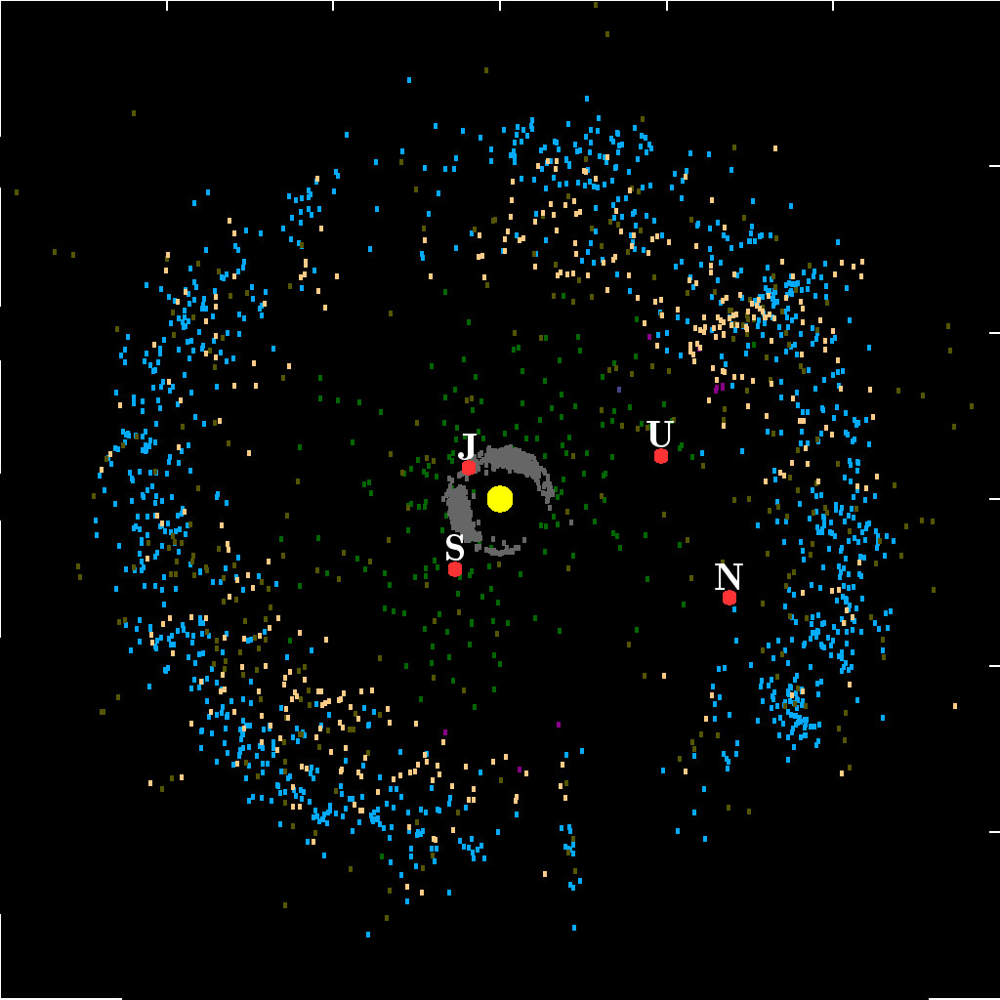

Poznaj skalę Układu Słonecznego
Ten model Układu Słonecznego znajduje się w miejscowości Żółwin na ul. Łąkowej (Google Maps). Składa się z modeli głównych ciał Układu Słonecznego z zachowaniem skali rozmiarów i odległości. Każdy metr, który pokonasz odpowiada dokładnie 10 milionom kilometrów w przestrzeni kosmicznej. Każdy centymetr na modelu to 100 000 kilometrów, a każdy milimetr to 10 000 kilometrów. Przechodząc od modelu Słońca do modeli kolejnych planet możesz doświadczyć ogromu pustki wypełniającej nasz układ Słoneczny i cały kosmos.

Słońce
Gwiazda. Centrum naszego Układu Słonecznego.

Merkury
Najmniejsza planeta. Najbliższa Słońcu.

Wenus
Planeta o gęstej atmosferze. Najgorętsza planeta.

Ziemia
Nasza planeta. Jedyne znane nam miejsce z życiem.

Mars
Czerwona planeta. Cel wielu misji kosmicznych.

Pas Planetoid
Region pełen asteroidów między Marsem a Jowiszem. Zawiera planetę karłowatą Ceres.

Jowisz
Największa planeta. Gazowy olbrzym.

Saturn
Planeta ze spektakularnymi pierścieniami.

Uran
Lodowy olbrzym. Obraca się na boku.

Neptun
Ostatnia planeta. Lodowy olbrzym z niebieskim kolorem.

Obrzeża Układu
Obiekty transneptunowe: Pas Kuipera, Dysk Rozproszony, planety karłowate takie jak Pluton, Eris, Haumea i Makemake.